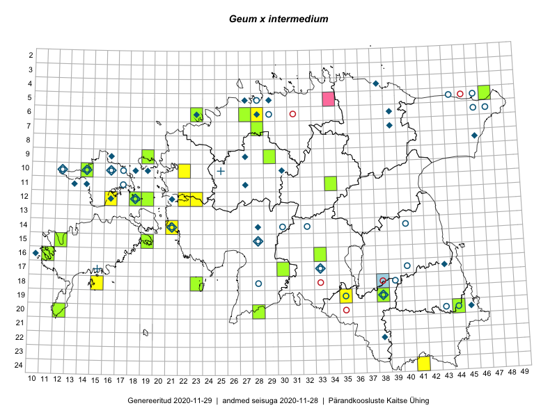

Geum ×intermedium — vahelmine mõõl
Kaardile koondatud taksonid: Geum ×intermedium Ehrh. (40); Geum intermedium Ehrh. (1)

Kaart põhineb 41 kirjel, neist:
vaatlusi 17
eksemplare 24
Kaasaegsed1 leiukohad asuvad 26 ruudus.
Andmed “Eesti taimede levikuatlasest”,2 sulgudes ruutude arv:3
● 1971–2005 (18)
○ 1921–1970 (19)
△ kuni 1920 (0)
+ hävinud (0)
? kaheldav (0)
Lisaruudud teistest andmebaasidest:4
ELF: 2006– . . . (2)
PKÜ: 2006– . . . (0)
ELF: 1971–2005 (0)
PKÜ: 1997–2005 (0)
| Ruut | Vaatleja(d) | Vaatlusaeg | Kirje PlutoFis |
|---|---|---|---|
| 18-15 | Ott Luuk, Elle Roosaluste, Jaak-Albert Metsoja | 2015-06-16 | ruut/ala: Geum ×intermedium Ehrh. |
| 19-35 | Ott Luuk, Hannes Pehlak | 2015-06-12 | ruut/ala: Geum ×intermedium Ehrh. |
| 17-30 | Ott Luuk, Hannes Pehlak | 2015-06-11 | ruut/ala: Geum ×intermedium Ehrh. |
| 20-12 | Triin Reitalu, Sirje Azarov | 2015-05-30 | ruut/ala: Geum ×intermedium Ehrh. |
| 12-23 | Thea Kull, Eerik Leibak | 2015-08-26 | ruut/ala: Geum ×intermedium Ehrh. |
| 06-28 | Tõnu Ploompuu | 2015-06-06 | ruut/ala: Geum ×intermedium Ehrh. |
| 10-22 | Tõnu Ploompuu | 2015-05-20 | ruut/ala: Geum ×intermedium Ehrh. |
| 24-41 | Ott Luuk, Sander Laherand, Susanna Vain | 2016-06-15 | ruut/ala: Geum ×intermedium Ehrh. |
| 14-21 | Toomas Kukk | 2009-06-29 | ruut/ala: Geum ×intermedium Ehrh. |
| 12-18 | Toomas Kukk | 2017-06-15 | ruut/ala: Geum ×intermedium Ehrh. |
| 12-18 | Toomas Kukk, Peeter Pärn | 2017-06-15 | ruut/ala: Geum ×intermedium Ehrh. |
| 20-12 | Triin Reitalu | 2015-05-30 | punkt: Geum ×intermedium Ehrh. |
| 07-28 | Thea Kull, Meeli Mesipuu | 2016-06-02 | punkt: Geum ×intermedium Ehrh. |
| 24-41 | Sander Laherand, Ott Luuk, Susanna Vain | 2016-06-15 | punkt: Geum ×intermedium Ehrh. |
| 06-28 | Tõnu Ploompuu | 2015-06-06 | punkt: Geum ×intermedium Ehrh. |
| 12-18 | Toomas Kukk, Indrek Tammekänd, Peeter Pärn | 2019-06-01 | ruut/ala: Geum ×intermedium Ehrh. |
| 12-16 | Toomas Kukk, Indrek Tammekänd | 2019-06-03 | punkt: Geum ×intermedium Ehrh. |
| 15-12 | Peedu Saar, Thea Kull | 2015-06-30 | TAA0135232: Geum ×intermedium Ehrh. |
| 05-47 | Jana-Maria Habicht | 2012-05-27 | TAM0121340: Geum ×intermedium Ehrh. |
| 16-11 | Uve Ramst | 2011-06-15 | TAM0122020: Geum ×intermedium Ehrh. |
| 18-23 | Silvia Pihu | 2015-05-30 | TU309713: Geum ×intermedium Ehrh. |
| 09-19 | J.-M. Habicht | 2012-06-16 | TAM0126914: Geum ×intermedium Ehrh. |
| 19-38 | J.-M. Habicht | 2012-06-08 | TAM0126915: Geum ×intermedium Ehrh. |
| 20-44 | Peedu Saar, Tarmo Niitla | 2016-06-15 | TAA0132934: Geum ×intermedium Ehrh. |
| 20-28 | Peedu Saar, Ott Luuk | 2016-06-09 | TAA0132935: Geum ×intermedium Ehrh. |
| 10-14 | Thea Kull | 2015-06-14 | TAA0113667: Geum ×intermedium Ehrh. |
| 09-29 | Thea Kull, Ott Luuk | 2016-05-30 | TAA0133496: Geum ×intermedium Ehrh. |
| 07-28 | Thea Kull, Meeli Mesipuu | 2016-06-02 | TAA0133500: Geum ×intermedium Ehrh. |
| 16-33 | Maria Abakumova | 2015-06-30 | TAA0119973: Geum ×intermedium Ehrh. |
| 20-12 | Triin Reitalu, Sirje Azarov | 2015-05-31 | TAA0140144: Geum ×intermedium Ehrh. |
| 20-12 | Triin Reitalu, Sirje Azarov | 2015-05-31 | TAA0140145: Geum ×intermedium Ehrh. |
| 06-23 | Ott Luuk, Mari Metsoja | 2015-06-04 | TAA0139123: Geum ×intermedium Ehrh. |
| 12-18 | Toomas Kukk | 2017-06-15 | TAA0142234: Geum ×intermedium Ehrh. |
| 12-18 | Toomas Kukk | 2017-06-15 | TAA0142235: Geum ×intermedium Ehrh. |
| 12-18 | Toomas Kukk | 2017-06-15 | TAA0142239: Geum ×intermedium Ehrh. |
| 11-34 | Ott Luuk, Hannes Pehlak | 2015-06-08 | TAA0145879: Geum ×intermedium Ehrh. |
| 11-34 | Ott Luuk, Hannes Pehlak | 2015-06-08 | TAA0145880: Geum ×intermedium Ehrh. |
| 17-30 | Ott Luuk, Hannes Pehlak | 2015-06-11 | TAA0145937: Geum ×intermedium Ehrh. |
| 17-30 | Ott Luuk, Hannes Pehlak | 2015-06-11 | TAA0145938: Geum ×intermedium Ehrh. |
| 12-19 | Toomas Kukk, Ilmar Uibopuu, Mari Reitalu | 2018-05-27 | TAA0147033: Geum ×intermedium Ehrh. |
| 12-18 | Indrek Tammekänd, Toomas Kukk, Peeter Pärn | 2019-06-01 | TAA0152034: Geum intermedium Ehrh. |
Kaasaegsed leiukohad (tähistatud värvitud ruutudega) põhinevad peamiselt 2014–2019 välitööandmetel. Väiksemal määral on andmebaasi kantud vanemaid leiuandmeid aastatest 2006–2013.↩︎
Kukk, T., Kull, T., Eesti taimede levikuatlas. Eesti Maaülikool, Põllumajandus- ja Keskkonnainstituut, Tartu, 2005.↩︎
NB! 2005. aasta atlase andmestikus katavad uuemad leiud vanemaid. Näiteks kui liik on ruudus registreeritud 1971–2005, siis pole võimalik öelda, kas ta oli sellest ruudust teada ka enne 1970. aastat. Vana atlase andmetel hävinud ja kaheldavaid leiukohti pole hilisemate (taas)leidude põhjal korrigeeritud.↩︎
Eestimaa Looduse Fondi (ELF) ja Pärandkoosluste Kaitse Ühingu (PKÜ) andmebaasid sisaldavad inventeeritud koosluste kirjeldusi ja liigiloendeid. Neist andmekogudest on kaardile lisatud lisatud vaid need ruudud, millest uue atlase andmekogus taksoni kohta kirjeid veel pole. Kõrvale on jäetud teadaolevalt kaheldavad määrangud. Kaartidel katavad uuema perioodi andmed vanemaid, PKÜ omad ELFi omi. Kattumise tõttu võib kaardil näha olla vähem mingi kategooria ruute kui legendis olev arv näitab. ELFi ja PKÜ andmed ei kajastu hetkel vaatluste tabelis ega ruutude liigiloendites.↩︎